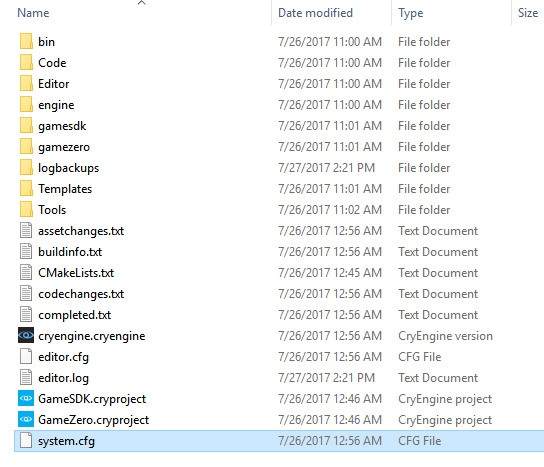
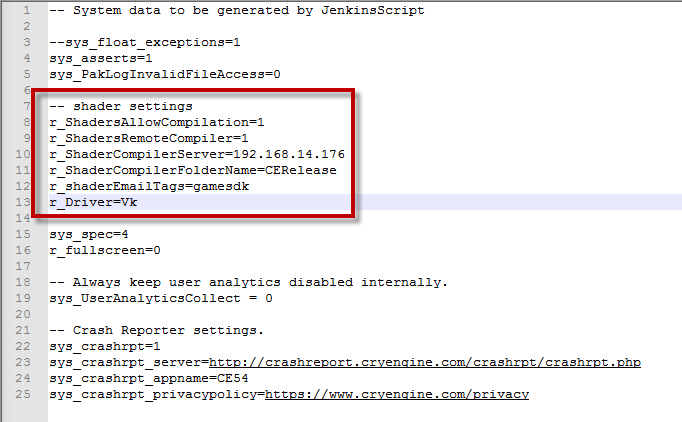

This feature is still in beta and subject to constant change. We encourage you to use it in test projects and provide your feedback to us.
However, DO NOT use it in production where it creates dependencies! Always back up your projects to make sure that you can go back to a previous version.
Overview
Vulkan is a new generation graphics and compute API that provides high-efficiency, cross-platform access to modern GPUs used in a wide variety of devices from PCs and consoles to mobile phones and embedded platforms. It is a low-overhead, cross-platform 3D graphics library that gives developers more control over the GPU and lower level CPU usage for their Android-based mobile projects. In the following topic, we will go over how you can enable and use Vulkan in your CRYENGINE projects.
Currently, Vulkan support in CRYENGINE is an experimental feature. For more information, head over to the .
Prerequisites
You need to compile Remote Shader manually, for more information please refer Remote Shader Compiler.
Supported Devices and Drivers
For information on supported devices and drivers for Vulkan, please refer: http://vulkan.gpuinfo.org/
Currently, CRYENGINE may work on early versions of Vulkan but only have been tested on 1.0.46 version onwards.
Supported Operating Systems:
- Windows 7
- Windows 10
It is recommended to use the 64-bit operating system for the above-mentioned options.
Enabling Vulkan Support in CRYENGINE
To build a CRYENGINE project that has support for the Vulkan API, you will need to do the following:
- Navigate to the CRYENGINE Installation Directory.

- Right-click the system.cfg file and edit it using a text editing software (Notepad++).
- In the system.cfg file, add or change the cvar directive r_Driver=(X) under the shader settings, for example, "r_Driver=DX12/DX11" to "r_Driver=Vk".
You may also need to set "r_ShaderCompilerPort" to the value of 'port' found in Tools/RemoteShaderCompiler/config.ini.
- Save the cfg file, and restart the CRYENGINE editor.
- Enable the Remote Shader Compiler (See Prerequisites above).
- Now, you should have enabled Vulkan support in CRYENGINE.
By Default, CRYENGINE's drivers are set to DX11/DX12 which prevents the editor to utilize Vulkan support in the game mode. Make sure you use game-launcher to test Vulkan support.